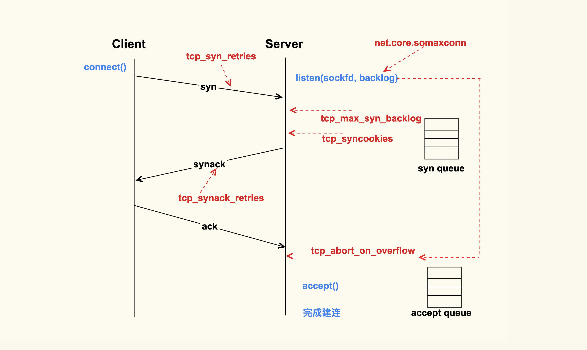
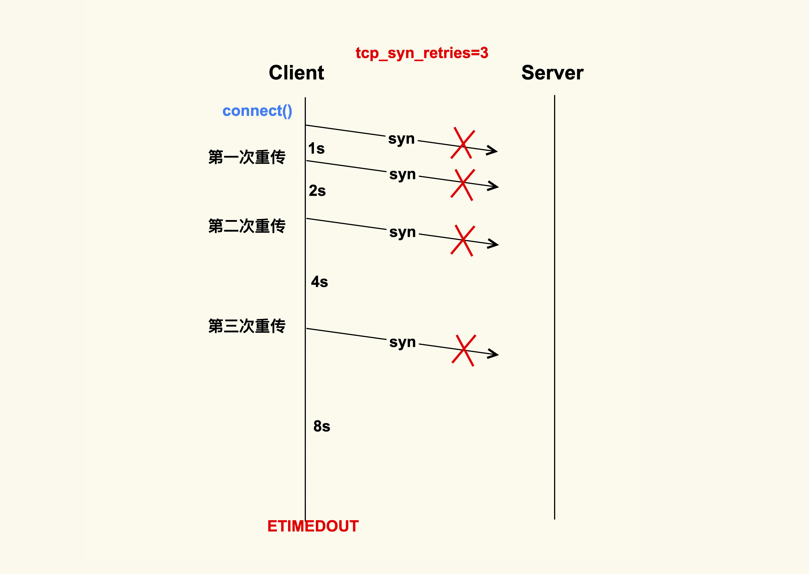
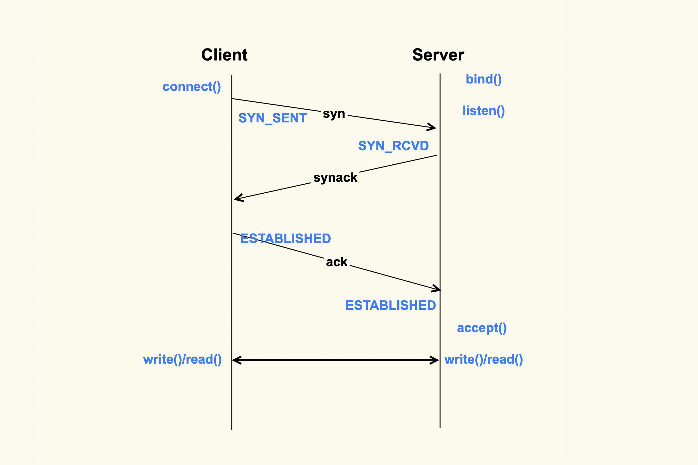
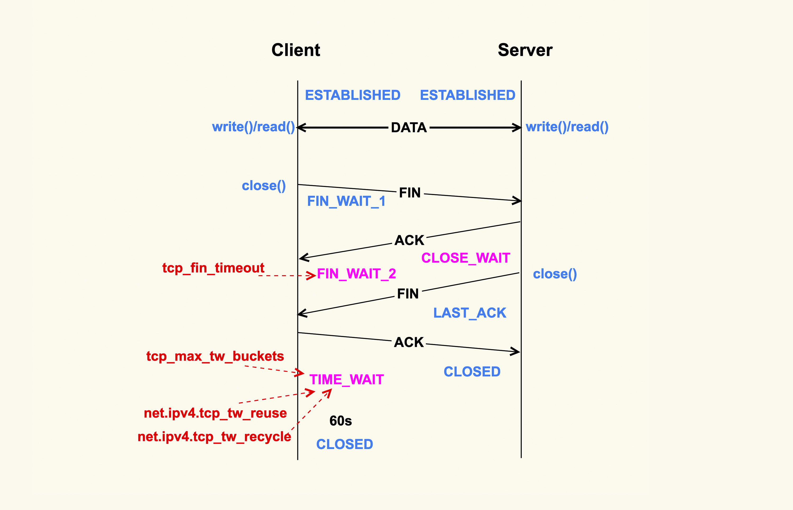
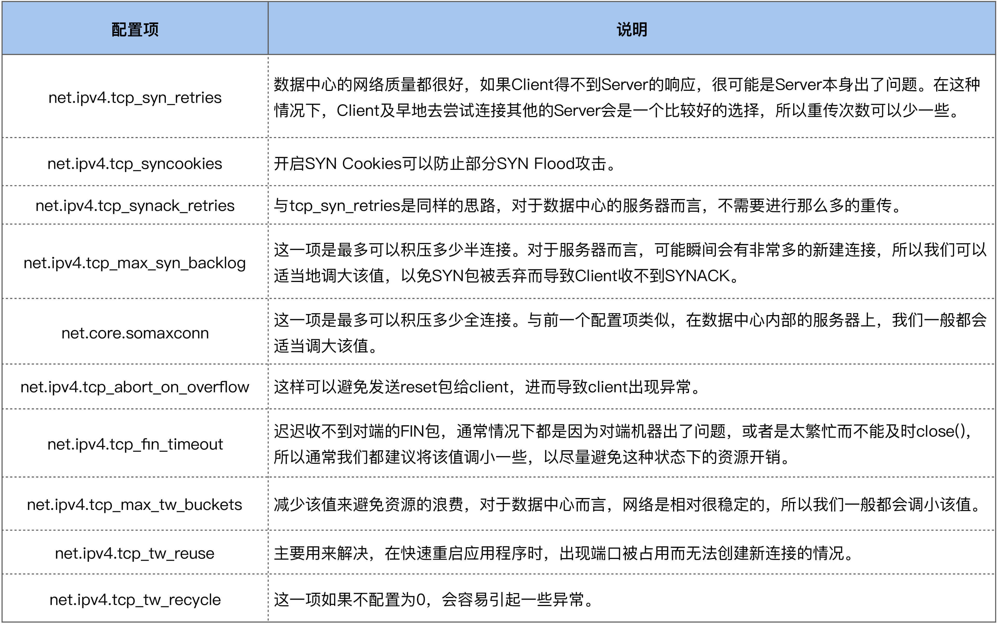

- 00 开篇词 如何让Linux内核更好地服务应用程序？.md.html
- 01 基础篇 如何用数据观测Page Cache？.md.html
- 02 基础篇 Page Cache是怎样产生和释放的？.md.html
- 03 案例篇 如何处理Page Cache难以回收产生的load飙高问题？.md.html
- 04 案例篇 如何处理Page Cache容易回收引起的业务性能问题？.md.html
- 05 分析篇 如何判断问题是否由Page Cache产生的？.md.html
- 06 基础篇 进程的哪些内存类型容易引起内存泄漏？.md.html
- 07 案例篇 如何预防内存泄漏导致的系统假死？.md.html
- 08 案例篇 Shmem：进程没有消耗内存，内存哪去了？.md.html
- 09 分析篇 如何对内核内存泄漏做些基础的分析？.md.html
- 10 分析篇 内存泄漏时，我们该如何一步步找到根因？.md.html
- 11 基础篇 TCP连接的建立和断开受哪些系统配置影响？.md.html
- 12 基础篇 TCP收发包过程会受哪些配置项影响？.md.html
- 13 案例篇 TCP拥塞控制是如何导致业务性能抖动的？.md.html
- 14 案例篇 TCP端到端时延变大，怎样判断是哪里出现了问题？.md.html
- 15 分析篇 如何高效地分析TCP重传问题？.md.html
- 16 套路篇 如何分析常见的TCP问题？.md.html
- 17 基础篇 CPU是如何执行任务的？.md.html
- 18 案例篇 业务是否需要使用透明大页：水可载舟，亦可覆舟？.md.html
- 19 案例篇 网络吞吐高的业务是否需要开启网卡特性呢？.md.html
- 20 分析篇 如何分析CPU利用率飙高问题 ？.md.html
- 加餐 我是如何使用tracepoint来分析内核Bug的？.md.html
- 结束语 第一次看内核代码，我也很懵逼.md.html
- 捐赠
11 基础篇 TCP连接的建立和断开受哪些系统配置影响？
你好，我是邵亚方。
如果你做过Linux上面网络相关的开发，或者分析过Linux网络相关的问题，那你肯定吐槽过Linux系统里面让人眼花缭乱的各种配置项，应该也被下面这些问题困扰过：
- Client为什么无法和Server建立连接呢？
- 三次握手都完成了，为什么会收到Server的reset呢？
- 建立TCP连接怎么会消耗这么多时间？
- 系统中为什么会有这么多处于time-wait的连接？该这么处理？
- 系统中为什么会有这么多close-wait的连接？
- 针对我的业务场景，这么多的网络配置项，应该要怎么配置呢？
- ……
因为网络这一块涉及到的场景太多了，Linux内核需要去处理各种各样的网络场景，不同网络场景的处理策略也会有所不同。而Linux内核的默认网络配置可能未必会适用我们的场景，这就可能导致我们的业务出现一些莫名其妙的行为。
所以，要想让业务行为符合预期，你需要了解Linux的相关网络配置，让这些配置更加适用于你的业务。Linux中的网络配置项是非常多的，为了让你更好地了解它们，我就以最常用的TCP/IP协议为例，从一个网络连接是如何建立起来的以及如何断开的来开始讲起。
TCP连接的建立过程会受哪些配置项的影响？

上图就是一个TCP连接的建立过程。TCP连接的建立是一个从Client侧调用connect()，到Server侧accept()成功返回的过程。你可以看到，在整个TCP建立连接的过程中，各个行为都有配置选项来进行控制。
Client调用connect()后，Linux内核就开始进行三次握手。
首先Client会给Server发送一个SYN包，但是该SYN包可能会在传输过程中丢失，或者因为其他原因导致Server无法处理，此时Client这一侧就会触发超时重传机制。但是也不能一直重传下去，重传的次数也是有限制的，这就是tcp_syn_retries这个配置项来决定的。
假设tcp_syn_retries为3，那么SYN包重传的策略大致如下：

在Client发出SYN后，如果过了1秒 ，还没有收到Server的响应，那么就会进行第一次重传；如果经过2s的时间还没有收到Server的响应，就会进行第二次重传；一直重传tcp_syn_retries次。
对于tcp_syn_retries为3而言，总共会重传3次，也就是说从第一次发出SYN包后，会一直等待（1 + 2 + 4 + 8）秒，如果还没有收到Server的响应，connect()就会产生ETIMEOUT的错误。
tcp_syn_retries的默认值是6，也就是说如果SYN一直发送失败，会在（1 + 2 + 4 + 8 + 16+ 32 + 64）秒，即127秒后产生ETIMEOUT的错误。
我们在生产环境上就遇到过这种情况，Server因为某些原因被下线，但是Client没有被通知到，所以Client的connect()被阻塞127s才去尝试连接一个新的Server， 这么长的超时等待时间对于应用程序而言是很难接受的。
所以通常情况下，我们都会将数据中心内部服务器的tcp_syn_retries给调小，这里推荐设置为2，来减少阻塞的时间。因为对于数据中心而言，它的网络质量是很好的，如果得不到Server的响应，很可能是Server本身出了问题。在这种情况下，Client及早地去尝试连接其他的Server会是一个比较好的选择，所以对于客户端而言，一般都会做如下调整：
net.ipv4.tcp_syn_retries = 2
有些情况下1s的阻塞时间可能都很久，所以有的时候也会将三次握手的初始超时时间从默认值1s调整为一个较小的值，比如100ms，这样整体的阻塞时间就会小很多。这也是数据中心内部经常进行一些网络优化的原因。
如果Server没有响应Client的SYN，除了我们刚才提到的Server已经不存在了这种情况外，还有可能是因为Server太忙没有来得及响应，或者是Server已经积压了太多的半连接（incomplete）而无法及时去处理。
半连接，即收到了SYN后还没有回复SYNACK的连接，Server每收到一个新的SYN包，都会创建一个半连接，然后把该半连接加入到半连接队列（syn queue）中。syn queue的长度就是tcp_max_syn_backlog这个配置项来决定的，当系统中积压的半连接个数超过了该值后，新的SYN包就会被丢弃。对于服务器而言，可能瞬间会有非常多的新建连接，所以我们可以适当地调大该值，以免SYN包被丢弃而导致Client收不到SYNACK：
net.ipv4.tcp_max_syn_backlog = 16384
Server中积压的半连接较多，也有可能是因为有些恶意的Client在进行SYN Flood攻击。典型的SYN Flood攻击如下：Client高频地向Server发SYN包，并且这个SYN包的源IP地址不停地变换，那么Server每次接收到一个新的SYN后，都会给它分配一个半连接，Server的SYNACK根据之前的SYN包找到的是错误的Client IP， 所以也就无法收到Client的ACK包，导致无法正确建立TCP连接，这就会让Server的半连接队列耗尽，无法响应正常的SYN包。
为了防止SYN Flood攻击，Linux内核引入了SYN Cookies机制。SYN Cookie的原理是什么样的呢？
在Server收到SYN包时，不去分配资源来保存Client的信息，而是根据这个SYN包计算出一个Cookie值，然后将Cookie记录到SYNACK包中发送出去。对于正常的连接，该Cookies值会随着Client的ACK报文被带回来。然后Server再根据这个Cookie检查这个ACK包的合法性，如果合法，才去创建新的TCP连接。通过这种处理，SYN Cookies可以防止部分SYN Flood攻击。所以对于Linux服务器而言，推荐开启SYN Cookies：
net.ipv4.tcp_syncookies = 1
Server向Client发送的SYNACK包也可能会被丢弃，或者因为某些原因而收不到Client的响应，这个时候Server也会重传SYNACK包。同样地，重传的次数也是由配置选项来控制的，该配置选项是tcp_synack_retries。
tcp_synack_retries的重传策略跟我们在前面讲的tcp_syn_retries是一致的，所以我们就不再画图来讲解它了。它在系统中默认是5，对于数据中心的服务器而言，通常都不需要这么大的值，推荐设置为2 :
net.ipv4.tcp_synack_retries = 2
Client在收到Server的SYNACK包后，就会发出ACK，Server收到该ACK后，三次握手就完成了，即产生了一个TCP全连接（complete），它会被添加到全连接队列（accept queue）中。然后Server就会调用accept()来完成TCP连接的建立。
但是，就像半连接队列（syn queue）的长度有限制一样，全连接队列（accept queue）的长度也有限制，目的就是为了防止Server不能及时调用accept()而浪费太多的系统资源。
全连接队列（accept queue）的长度是由listen(sockfd, backlog)这个函数里的backlog控制的，而该backlog的最大值则是somaxconn。somaxconn在5.4之前的内核中，默认都是128（5.4开始调整为了默认4096），建议将该值适当调大一些：
net.core.somaxconn = 16384
当服务器中积压的全连接个数超过该值后，新的全连接就会被丢弃掉。Server在将新连接丢弃时，有的时候需要发送reset来通知Client，这样Client就不会再次重试了。不过，默认行为是直接丢弃不去通知Client。至于是否需要给Client发送reset，是由tcp_abort_on_overflow这个配置项来控制的，该值默认为0，即不发送reset给Client。推荐也是将该值配置为0:
net.ipv4.tcp_abort_on_overflow = 0
这是因为，Server如果来不及accept()而导致全连接队列满，这往往是由瞬间有大量新建连接请求导致的，正常情况下Server很快就能恢复，然后Client再次重试后就可以建连成功了。也就是说，将 tcp_abort_on_overflow 配置为0，给了Client一个重试的机会。当然，你可以根据你的实际情况来决定是否要使能该选项。
accept()成功返回后，一个新的TCP连接就建立完成了，TCP连接进入到了ESTABLISHED状态：

上图就是从Client调用connect()，到Server侧accept()成功返回这一过程中的TCP状态转换。这些状态都可以通过netstat或者ss命令来看。至此，Client和Server两边就可以正常通信了。
接下来，我们看下TCP连接断开过程中会受哪些系统配置项的影响。
TCP连接的断开过程会受哪些配置项的影响？

如上所示，当应用程序调用close()时，会向对端发送FIN包，然后会接收ACK；对端也会调用close()来发送FIN，然后本端也会向对端回ACK，这就是TCP的四次挥手过程。
首先调用close()的一侧是active close（主动关闭）；而接收到对端的FIN包后再调用close()来关闭的一侧，称之为passive close（被动关闭）。在四次挥手的过程中，有三个TCP状态需要额外关注，就是上图中深红色的那三个状态：主动关闭方的FIN_WAIT_2和TIME_WAIT，以及被动关闭方的CLOSE_WAIT状态。除了CLOSE_WAIT状态外，其余两个状态都有对应的系统配置项来控制。
我们首先来看FIN_WAIT_2状态，TCP进入到这个状态后，如果本端迟迟收不到对端的FIN包，那就会一直处于这个状态，于是就会一直消耗系统资源。Linux为了防止这种资源的开销，设置了这个状态的超时时间tcp_fin_timeout，默认为60s，超过这个时间后就会自动销毁该连接。
至于本端为何迟迟收不到对端的FIN包，通常情况下都是因为对端机器出了问题，或者是因为太繁忙而不能及时close()。所以，通常我们都建议将 tcp_fin_timeout 调小一些，以尽量避免这种状态下的资源开销。对于数据中心内部的机器而言，将它调整为2s足以：
net.ipv4.tcp_fin_timeout = 2
我们再来看TIME_WAIT状态，TIME_WAIT状态存在的意义是：最后发送的这个ACK包可能会被丢弃掉或者有延迟，这样对端就会再次发送FIN包。如果不维持TIME_WAIT这个状态，那么再次收到对端的FIN包后，本端就会回一个Reset包，这可能会产生一些异常。
所以维持TIME_WAIT状态一段时间，可以保障TCP连接正常断开。TIME_WAIT的默认存活时间在Linux上是60s（TCP_TIMEWAIT_LEN），这个时间对于数据中心而言可能还是有些长了，所以有的时候也会修改内核做些优化来减小该值，或者将该值设置为可通过sysctl来调节。
TIME_WAIT状态存在这么长时间，也是对系统资源的一个浪费，所以系统也有配置项来限制该状态的最大个数，该配置选项就是tcp_max_tw_buckets。对于数据中心而言，网络是相对很稳定的，基本不会存在FIN包的异常，所以建议将该值调小一些：
net.ipv4.tcp_max_tw_buckets = 10000
Client关闭跟Server的连接后，也有可能很快再次跟Server之间建立一个新的连接，而由于TCP端口最多只有65536个，如果不去复用处于TIME_WAIT状态的连接，就可能在快速重启应用程序时，出现端口被占用而无法创建新连接的情况。所以建议你打开复用TIME_WAIT的选项：
net.ipv4.tcp_tw_reuse = 1
还有另外一个选项tcp_tw_recycle来控制TIME_WAIT状态，但是该选项是很危险的，因为它可能会引起意料不到的问题，比如可能会引起NAT环境下的丢包问题。所以建议将该选项关闭：
net.ipv4.tcp_tw_recycle = 0
因为打开该选项后引起了太多的问题，所以新版本的内核就索性删掉了这个配置选项：tcp: remove tcp_tw_recycle.
对于CLOSE_WAIT状态而言，系统中没有对应的配置项。但是该状态也是一个危险信号，如果这个状态的TCP连接较多，那往往意味着应用程序有Bug，在某些条件下没有调用close()来关闭连接。我们在生产环境上就遇到过很多这类问题。所以，如果你的系统中存在很多CLOSE_WAIT状态的连接，那你最好去排查一下你的应用程序，看看哪里漏掉了close()。
至此，TCP四次挥手过程中需要注意的事项也讲完了。
好了，我们这节课就到此为止。
课堂总结
这节课我们讲了很多的配置项，我把这些配置项汇总到了下面这个表格里，方便你记忆：

当然了，有些配置项也是可以根据你的服务器负载以及CPU和内存大小来做灵活配置的，比如tcp_max_syn_backlog、somaxconn、tcp_max_tw_buckets这三项，如果你的物理内存足够大、CPU核数足够多，你可以适当地增大这些值，这些往往都是一些经验值。
另外，我们这堂课的目的不仅仅是为了让你去了解这些配置项，最主要的是想让你了解其背后的机制，这样你在遇到一些问题时，就可以有一个大致的分析方向。
课后作业
课后请你使用tcpdump这个工具来观察下TCP的三次握手和四次挥手过程，巩固今天的学习内容。欢迎在留言区分享你的看法。
感谢你的阅读，如果你认为这节课的内容有收获，也欢迎把它分享给你的朋友，我们下一讲见。
© 2019 - 2023 Liangliang Lee. Powered by gin and hexo-theme-book.